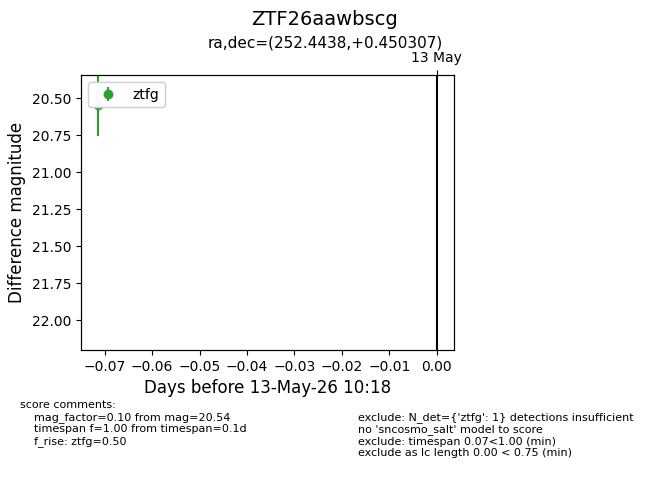
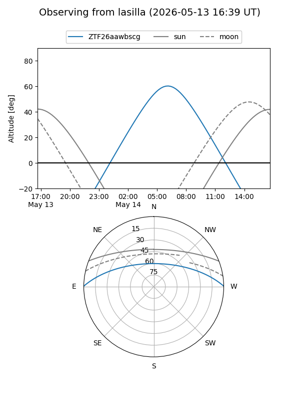
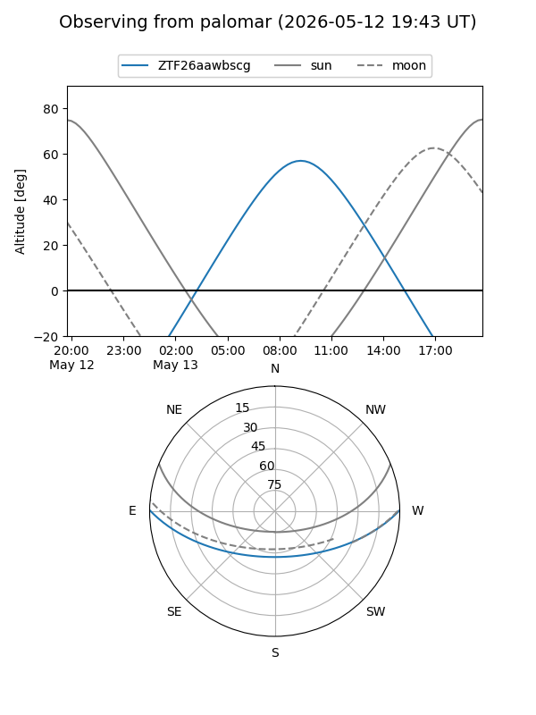

ZTF26aawbscg
Target ZTF26aawbscg at 2026-05-13 10:20
Aliases and brokers:
FINK: link
Lasair: link
ALeRCE: link
alt names
ZTF26aawbscg (ztf,fink_ztf)
Coordinates:
equatorial (ra, dec) = 252.4438,+0.45031
equatorial (HMS+DMS) = 16:49:46.51,+00:27:01.11
galactic (l, b) = (18.3802,+27.00986)
Flags:
Photometry:
last ztfg=20.54
1 ztfg detections
Lightcurve

Visibility


Additional plots